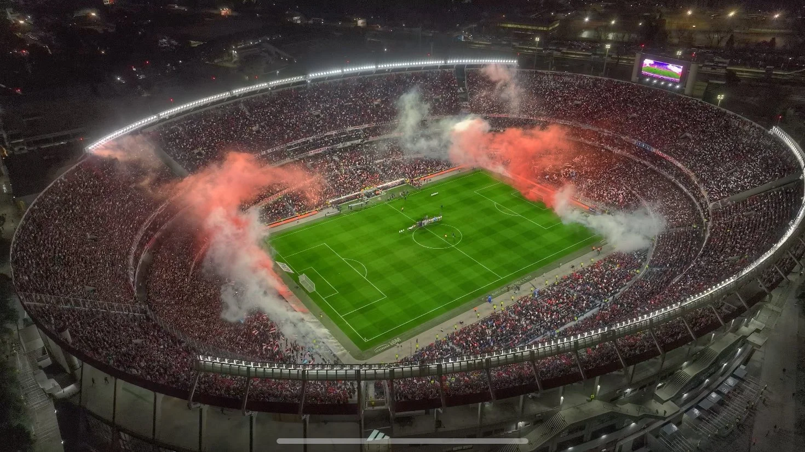
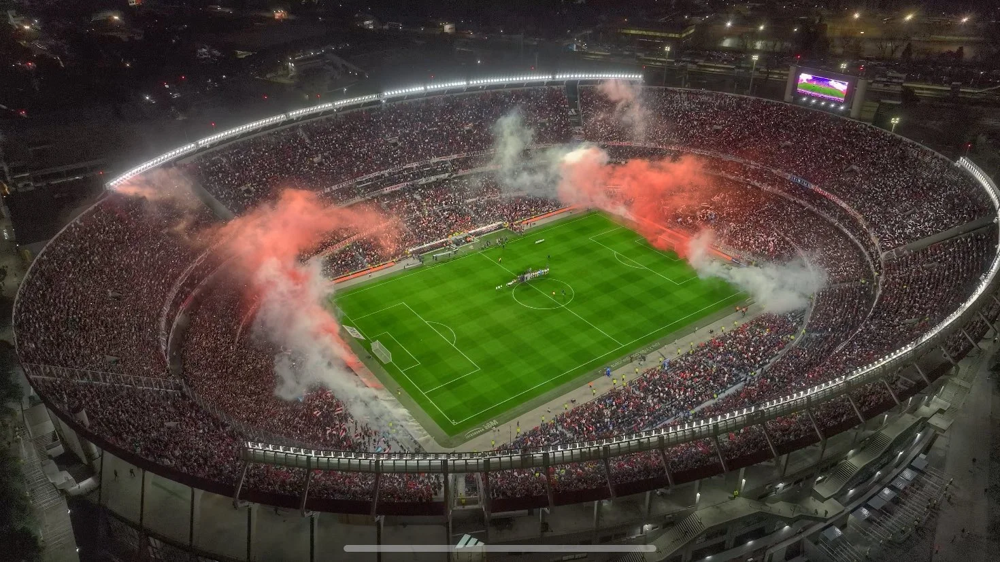

En 1901 se levanta la primera cancha del lado Este de la Dársena Sur, cerca de las Caboneras Wilson. En 1906, River es daslojado de su predio en la Dársena Sur por orden del Ministerio de Agricultura. El club se instala en Sarandí, al otro lado del Riachuelo. En 1907, el club se muda nuevamente, esta vez al lado Oeste de la Dársena Sur.

A fines de 1913 River sufre un nuevo desalojo y, para el torneo del año siguiente, debe alquilar provisoriamente la cancha de Ferro en Caballito. En 1915, el club se afinca nuevamente en La Boca, esta vez en la manzana comprendida por las calles Piazón, Caboto, Aristóbulo del Valle y Pedro de Mendoza. En 1923, José Basigaluppi, presidente de River, propone a la Comisión Directiva que el club se mude a Alvear y Tagle. El 20 de mayo River inaugura el nuevo estadio ante una multitud en un encuentro disputado frente a Peñarol de Montevideo.


El 25 de mayo de 1935 los dirigentes del club colocan la piedra fundamental del estadio Monumental. El 27 de septiembre comienza la construcción del estadio Monumental. Las obras están a cargo del estudio Aslan y Ezcurra Arquitectos. El 26 de mayo de 1938 ante 70.000 personas se inaugura el Monumental con un amistosos entre River y Peñarol. El conjunto local vence por 3 a 1 y Carlos Peucelle anota el primer tanto en el nuevo gigante de Núñez.
 


Con el dinero recaudado por la venta de Enrique Omar Sívori a la juventus se reúnen los fondos para completar las obras de la tribuna Almirante Brown Baja. La famosa "Herradura" comienza a cerrarse.Las remodelaciones del Monumental se iniciaron en 2020, durante la pandemia, y finalizaron en 2023 con la incorporación de 4 tribunas bajas. El costo total de los trabajos es de 70 millones de dólares.